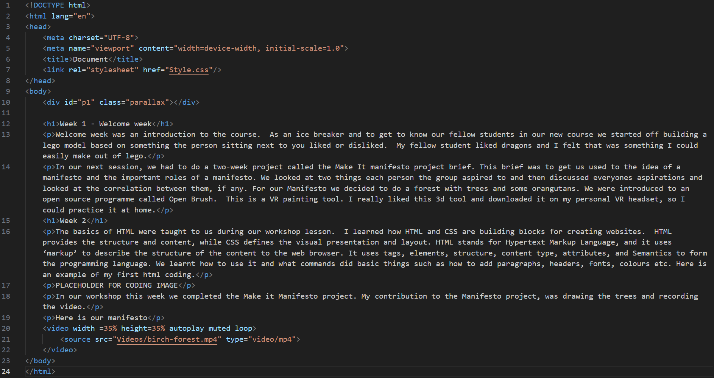
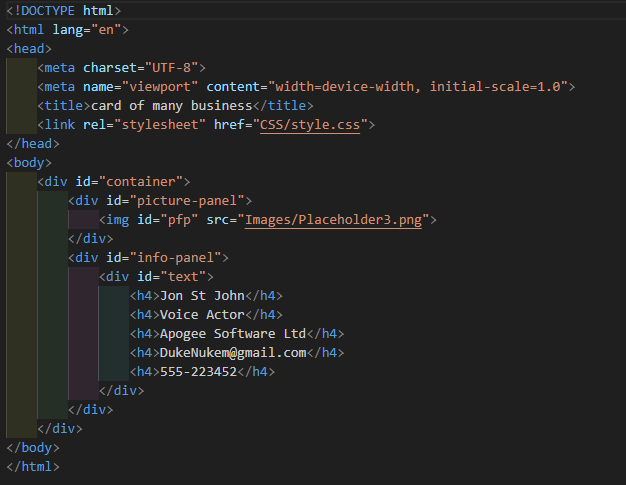
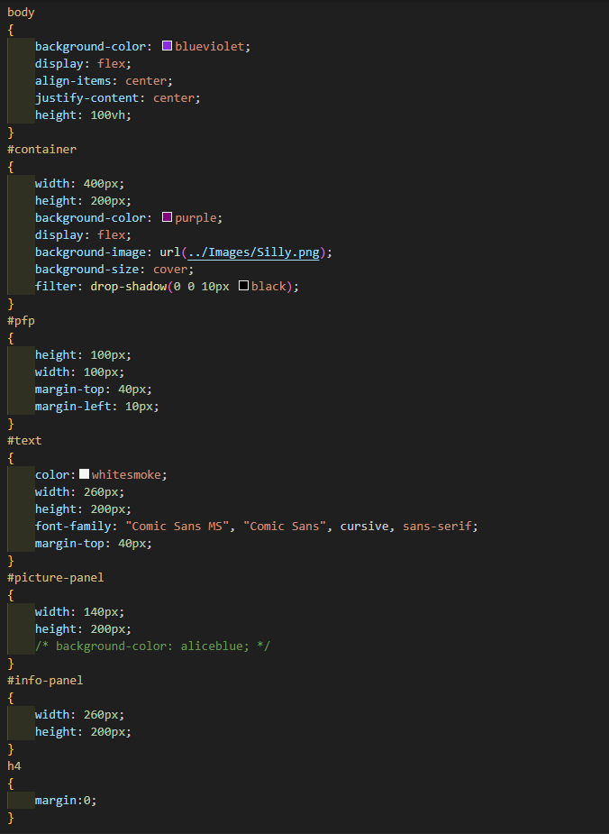
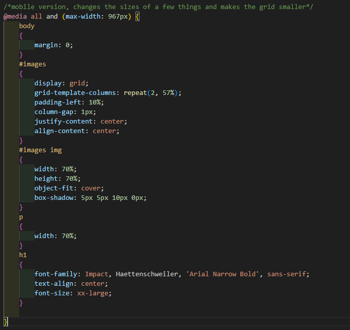
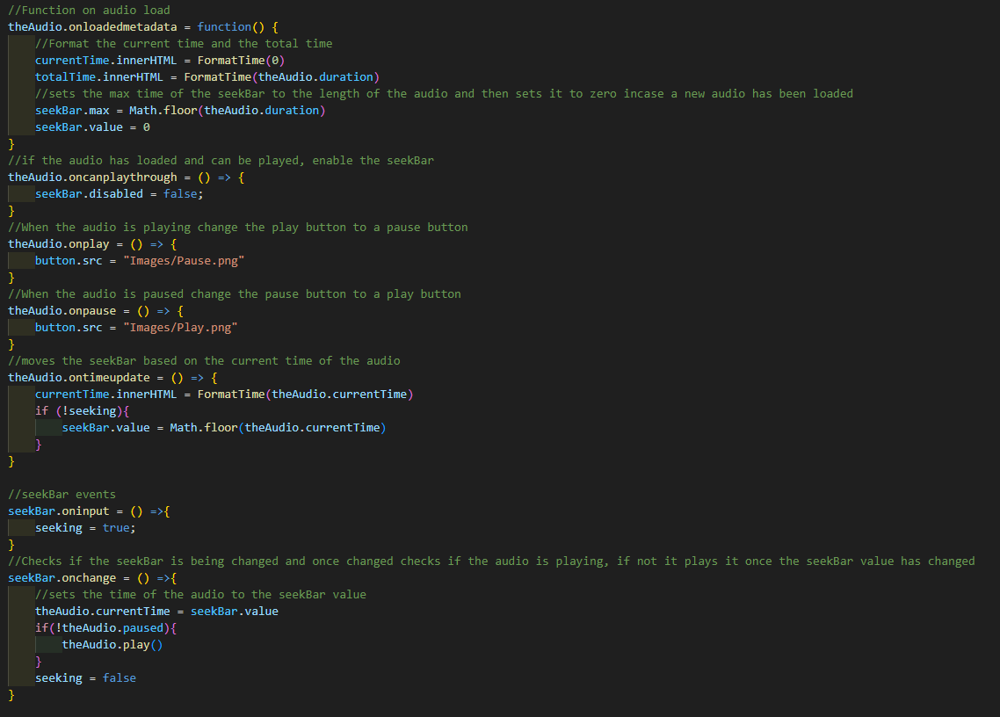
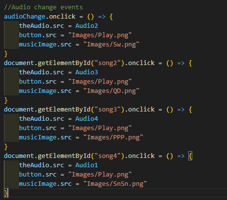
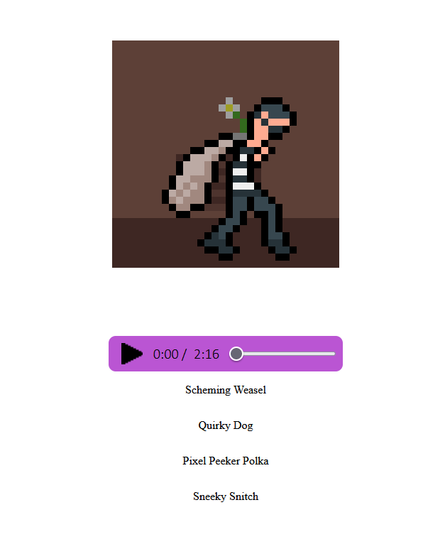
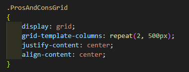

Welcome week was an introduction to the course. As an ice breaker and to get to know our fellow students in our new course we started off building a lego model based on something the person sitting next to you liked or disliked. My fellow student liked dragons and I felt that was something I could easily make out of lego.
In our next session, we had to do a two-week project called the Make It manifesto project brief. This brief was to get us used to the idea of a manifesto and the important roles of a manifesto. We looked at two things each person the group aspired to and then discussed everyones aspirations and looked at the correlation between them, if any. For our Manifesto we decided to do a forest with trees and some orangutans. We were introduced to an open source programme called Open Brush. This is a VR painting tool. I really liked this 3d tool and downloaded it on my personal VR headset, so I could practice it at home.
The basics of HTML were taught to us during our workshop lesson. I learned how HTML and CSS are building blocks for creating websites. HTML provides the structure and content, while CSS defines the visual presentation and layout. HTML stands for Hypertext Markup Language, and it uses ‘markup’ to describe the structure of the content to the web browser. It uses tags, elements, structure, content type, attributes, and Semantics to form the programming language. We learnt how to use it and what commands did basic things such as how to add paragraphs, headers, fonts, colours etc. Here is an example of my first html coding.
In our workshop this week we completed the Make it Manifesto project. My contribution to the Manifesto project, was drawing the trees and recording the video.
Here is our manifesto
We looked at CSS in our workshop today. CSS stands for Cascading Style Sheets. It is a style of sheet language that is used to control the look, feel, and layout of HTML elements. It uses Selectors, Declaration Blocks, Properties and Values, the box model, Integrations, and Key properties. We were told more about the Gallery Project we had to create and I got to work thinking of designs and the best way to go about the project. I had a good look at the basics of CSS and I taught myself how to use CSS grid after I had tried to use Flexbox for my gallery work, and I taught myself how to use CSS grid after trying to use Flexbox for my gallery work, but unfortunately I couldn’t get it to work the way I wanted to, so decided to try another method. I also learnt how to use custom fonts and also how to add a favicon. I actually taught myself this, but then we learnt how to do it in our next workshop.
In our Thursday workshop we had to create a business card using HTML and CSS to put into practise the skills we had learnt on HTML and CSS. Here is my code and Business Card
 I learnt the basics of Java script and worked a lot on my gallery. I worked on doing the mobile and tablet view, and ensuring that all the images where visible in each view. I had to change the layout of the box for the mobile view making the grid adjust size, having it show 2 photos wide and 6 long.
I had a pretty tough week this week, my grandparents had a bad car accident, so I missed my lectures. Unfortunately, this had a knock-on effect with me and I struggled after this point to attend any of my lectures due to anxiety and hyper focus on work. I did, however, continue to do my work and watched any videos put on the VLE and taught myself the coding. I learnt how to make an audio player using Java script. I started off making a very simple one and then decided I needed to add quite a lot more to it, so designed some pixel art pictures and found several different tracks to use them with, so that I could select different tracks and get a different picture for each track.
I worked on researching narrative websites, what that term actually means, and the best way to do it. I also looked at what topic I was going to use and done some research into that. I decided to focus my narrative on the history of DLC and micro transactions.
I did some more work on my audio player, I struggled to get it to change songs, but eventually I worked out that I needed to change the source. This took some time and some frustration but I am proud of myself for working out the issue.
Working on my narrative website, I decided to use parallax scrolling, this was a new technique for me, but after watching a few YouTube videos and looking at the lecture notes, I was able to teach myself how to do this.
Working mainly on the finishing touches this week, with the gallery done as much as I could, I concentrated on the media player and the scrolling narrative.
I managed to complete the media player although I do think I could have done more with it and include things such as skip buttons, now and next and maybe even volume control, but time was not on my side.
I taught myself how to add videos to websites, and how to resize them. I also added a parallax header to this journal. I had a few issues with resizing the header image, but through trial and error I managed to do this. I also added a custom colour back ground, an imported font and centralised all the text. I love the way this looks.
I did the final touches to my scrolling narrative add a bit more content and putting in a 4 box grid with appearing text.
When I first started doing HTML TML programming I found it very simple compared to any previous programming I have done before. But the more of this I do the more I realise that it is not as straight forward as I first thought and there is lots of different ways and methods to do things, some ways work better than others and a lot of things are trial and error rather than mathmatically accurate.